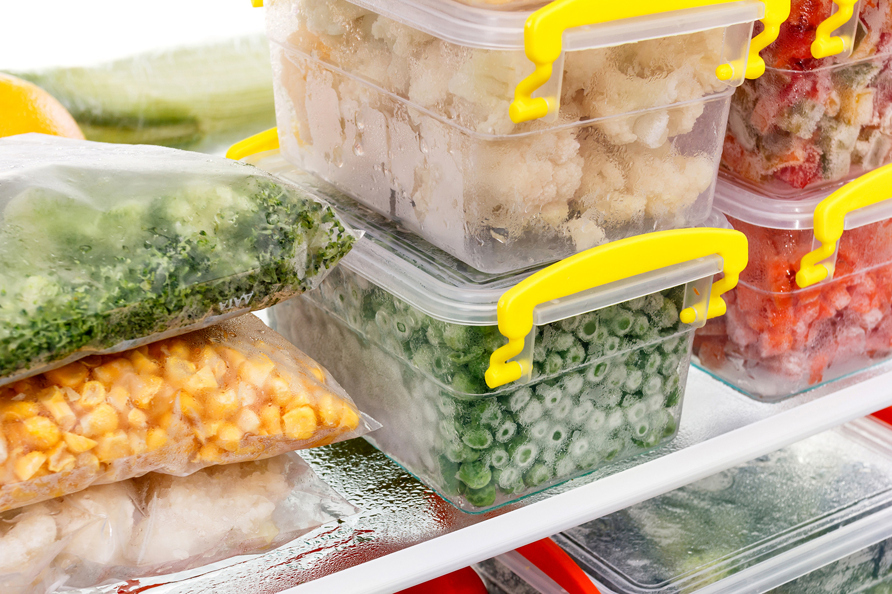

Freezer cooking – an introduction
Whether you’re a busy student with lots of activities or a working parent who’s struggling to find time for cooking, freezer cooking is something that can change your life.
by Katarzyna Zielińska
What is freezer cooking?
It goes by many names: Once a month cooking (or OAMC for short), freezer meals, meal assembly, bulk cooking and more. In basic terms, freezer cooking is preparing meals ahead of time and freezing them for later use.
How freezer cooking can benefit you?
First of all, this practice helps you save money. Since you’re cooking in bulk, you’re also buying in bulk which means the cost of all the ingredients in reduced. Secondly, you save time. You only pick one day to prepare food for the next week or even month. This way you don’t have to wonder what to cook and waste time on that later. Also, it's much easier to eat nutritious foods and control portions when you take the time to prepare food in advance.
How to get started?
-
Plan!
Schedule two block of time – first one to shop for all the ingredients and the second to prepare and cook everything. Probably the best time is Sunday. You can even invite your friends to have some fun coking together!
Pick your favourite recipes!
Start with recipes you know. You’re just starting, it’s not the time to experiment. Pick 3-4 favorite recipes to get started. Later on you can add more recipes to your menu.
Clean out the freezer
Make room for your food! Eat everything out of your freezer. You can invite your friends, they'll be happy to do this for you!
Use freezer storage containers and bags
Make sure you have enough place to store your food. Be very careful with glass because water expands when it freezes. I recommend using plastic containers, both disposable.
Make sure you have everything you need
Before you begin prepping, put all the ingredients for each recipe out on the table. This way I can make sure I have everything I need to begin and finish a recipe without having to go back to shop and lose time.
Prep all the ingredients
Chop vegetables, shred cheese, and do whatever needs to be done. I have found this to be the easiest way to move seamlessly through each recipe and have 2-3 different meals cooking at the same time.
Start cooking!
Invite your friends, play some cool music and enjoy your time!